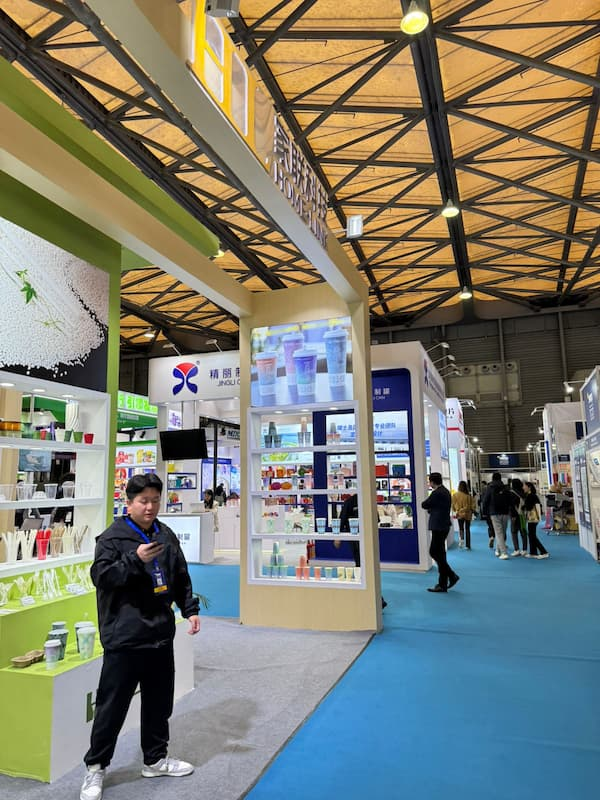
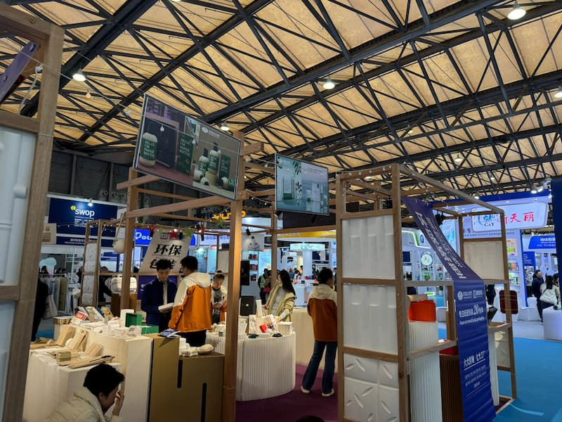

Недавно наша команда вернулась с выставки упаковки в Шанхае, где мы имели уникальную возможность погрузиться в мир современных технологий и инноваций, которые формируют будущее упаковочной индустрии. Это событие не только стало площадкой для демонстрации передовых решений, но и предоставило нам шанс обменяться знаниями и опытом с коллегами из разных уголков мира.

На выставке было представлено множество интересных решений, включая роботизированные системы, которые значительно упрощают рутинные процессы. Например, мы увидели роботов, способных перемещать палеты по заранее заданным маршрутам, а также устройства, которые помогают в перемещении материалов. Эти технологии обещают повысить эффективность нашего производства и снизить трудозатраты.
Одним из самых впечатляющих моментов выставки стал демонстрационный шоу с участием роботов, организованный одной из компаний. Эти высокотехнологичные устройства продемонстрировали, как автоматизация может изменить подход к производству, освободив сотрудников от монотонной работы и позволив им сосредоточиться на более творческих и сложных задачах.
Кроме того, наш сотрудник завел множество полезных контактов с новыми партнерами и обсудил возможности расширения нашего ассортимента. Встречи с текущими поставщиками также сыграли важную роль, ведь мы обсудили детали поставки оборудования, которое уже находится в пути к нам. Это взаимодействие не только укрепило наши деловые отношения, но и дало возможность узнать о новинках и трендах в упаковочной индустрии.
Выставка в Шанхае также стала уникальным опытом обмена культурными и профессиональными знаниями. Мы смогли пообщаться с коллегами из других стран, узнать о их подходах к упаковке и производству, а также обсудить общие вызовы и возможности в нашей отрасли. Этот обмен опытом стал важным шагом в нашем стремлении к постоянному развитию и внедрению инноваций.
В целом, выставка оказалась не только плодотворной, но и вдохновляющей. Мы уверены, что полученные знания и контакты помогут нам улучшить наши услуги и предложить клиентам ещё более качественные и современные решения в области упаковки.